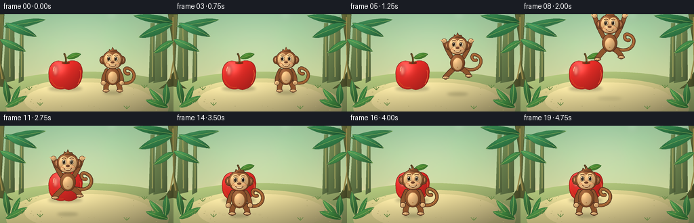
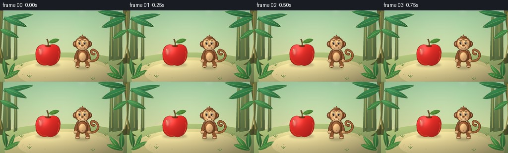
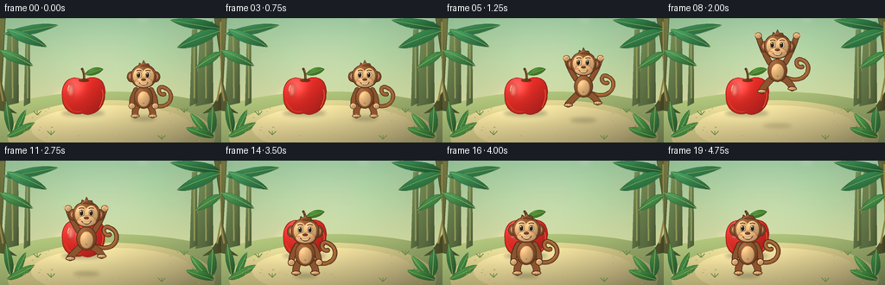

CODING AGENTS AS PIXEL WORLD MODELS
traex/GPT-6.1-Sol · dynamic_spatial_relationship_0059
点击播放 · 原生 RGB 像素
逐轮保存的候选
回放视频、检查图与代码变化。
每份候选均可单独播放。实际图片检查记录在下方工具轨迹中。
候选 01播放与检查图
点击播放 · 原生 RGB 像素

展开代码变化
--- 上一保存版本
+++ 本次保存版本
@@ -0,0 +1,236 @@
+from pathlib import Path
+import math, json
+import numpy as np
+from PIL import Image, ImageDraw, ImageFilter
+import artifact_io
+
+ROOT = Path(__file__).resolve().parent
+SPEC = json.loads((ROOT/'task_spec.json').read_text())
+W,H,S=SPEC['width'],SPEC['height'],4
+SIZE=(W*S,H*S)
+rng=np.random.default_rng(18)
+
+def coords(pts): return [(round(x*S), round(y*S)) for x,y in pts]
+def bezier(points,n=30):
+ p=np.array(points,float); out=[]
+ for t in np.linspace(0,1,n):
+ if len(p)==4: q=(1-t)**3*p[0]+3*(1-t)**2*t*p[1]+3*(1-t)*t*t*p[2]+t**3*p[3]
+ else: q=(1-t)**2*p[0]+2*(1-t)*t*p[1]+t*t*p[2]
+ out.append(tuple(q))
+ return out
+
+def line(im,pts,color,width):
+ d=ImageDraw.Draw(im); p=coords(pts); w=max(1,round(width*S))
+ d.line(p, fill=color,width=w,joint='curve')
+ r=w/2
+ for x,y in (p[0],p[-1]): d.ellipse((x-r,y-r,x+r,y+r),fill=color)
+
+def shape(im,pts,base,outline=None,width=.6,shine=0.0,texture=0):
+ pts=np.array(pts); x0=max(0,int(math.floor(pts[:,0].min()*S))-3); y0=max(0,int(math.floor(pts[:,1].min()*S))-3)
+ x1=min(W*S,int(math.ceil(pts[:,0].max()*S))+4); y1=min(H*S,int(math.ceil(pts[:,1].max()*S))+4)
+ if x1<=x0 or y1<=y0:return
+ mask=Image.new('L',(x1-x0,y1-y0)); md=ImageDraw.Draw(mask)
+ local=[(x*S-x0,y*S-y0) for x,y in pts]; md.polygon(local,fill=255)
+ yy,xx=np.mgrid[0:y1-y0,0:x1-x0]; xx=xx/(x1-x0); yy=yy/(y1-y0)
+ lighting=.77+.30*(1-yy)+.1*(1-xx)-.15*xx**3
+ highlight=np.exp(-((xx-.30)**2/.042+(yy-.23)**2/.063))*shine
+ color=np.array(base)[None,None,:]*lighting[:,:,None]+highlight[:,:,None]
+ if texture:
+ grain=np.sin(xx*313+yy*83)*np.sin(yy*227-xx*95)*texture
+ color+=grain[:,:,None]
+ patch=Image.fromarray(np.uint8(np.clip(color,0,255)))
+ im.paste(patch,(x0,y0),mask)
+ if outline: ImageDraw.Draw(im).line(coords(list(map(tuple,pts))+[tuple(pts[0])]),fill=outline,width=max(1,round(width*S)),joint='curve')
+
+def oval(im,box,base,outline=None,width=.6,shine=0,texture=0):
+ x0,y0,x1,y1=box
+ pts=[((x0+x1)/2+(x1-x0)/2*math.cos(t),(y0+y1)/2+(y1-y0)/2*math.sin(t)) for t in np.linspace(0,2*math.pi,90)]
+ shape(im,pts,base,outline,width,shine,texture)
+
+def shadow(im,x,y,rx,ry,opacity=65):
+ layer=Image.new('RGBA',SIZE)
+ ImageDraw.Draw(layer).ellipse(((x-rx)*S,(y-ry)*S,(x+rx)*S,(y+ry)*S),fill=(37,44,22,opacity))
+ layer=layer.filter(ImageFilter.GaussianBlur(2*S)); im.paste(layer,(0,0),layer)
+
+# Warm, softly receding tropical garden: all geometry is generated here.
+def background():
+ yy,xx=np.mgrid[0:H*S,0:W*S]; yy=yy/(H*S); xx=xx/(W*S)
+ top=np.array([156,197,158]); bottom=np.array([233,224,167])
+ blend=np.clip(yy*1.35,0,1)[:,:,None]
+ arr=top*(1-blend)+bottom*blend
+ glow=np.exp(-((xx-.47)**2/.12+(yy-.31)**2/.20))*26
+ arr+=glow[:,:,None]
+ im=Image.fromarray(np.uint8(np.clip(arr,0,255)))
+ distant=Image.new('RGBA',SIZE); d=ImageDraw.Draw(distant)
+ for i in range(65):
+ x=float(rng.uniform(-20,275)); y=float(rng.uniform(10,92)); r=float(rng.uniform(9,32))
+ d.ellipse(((x-r)*S,(y-r)*S,(x+r)*S,(y+r)*S),fill=(66+int(rng.integers(20)),128+int(rng.integers(20)),85,42))
+ distant=distant.filter(ImageFilter.GaussianBlur(5*S)); im.paste(distant,(0,0),distant)
+ # Rounded clearing, gentle ground shadows and a central pool of warm daylight.
+ oval(im,(-40,85,295,183),(160,179,112))
+ oval(im,(9,95,249,179),(206,196,133),shine=10)
+ oval(im,(36,101,224,155),(222,207,146),shine=11)
+ # Distant trunks
+ for x,y,w in [(15,13,12),(239,4,14),(32,20,5),(225,13,6)]:
+ shape(im,[(x-w/2,y),(x+w/2,y),(x+w*.55,98),(x-w*.9,102)],(104,126,76))
+ line(im,[(x-w*.1,y+8),(x-w*.05,92)],(146,151,87),1.7)
+ # Foreground trunks on edges, curved root bases.
+ for x in [-3,257]:
+ direction=1 if x<100 else -1
+ pts=[(x-9,0),(x+9,0),(x+5,76),(x+12*direction,103),(x+22*direction,110),(x-7*direction,105)]
+ shape(im,pts,(96,100,54),(65,82,42),.8,shine=9)
+ line(im,[(x+2*direction,5),(x+direction,68),(x+6*direction,95)],(147,132,71),2)
+ # Broad banana-like leaves around edges.
+ def leaf(x,y,dx,dy,col,width):
+ length=math.hypot(dx,dy); nx=-dy/length; ny=dx/length
+ a=(x,y); tip=(x+dx,y+dy)
+ pts=bezier([a,(x+dx*.2+nx*width,y+dy*.2+ny*width),(x+dx*.75+nx*width*.5,y+dy*.75+ny*width*.5),tip])
+ pts+=bezier([tip,(x+dx*.68-nx*width*.8,y+dy*.68-ny*width*.8),(x+dx*.18-nx*width*.45,y+dy*.18-ny*width*.45),a])
+ shape(im,pts,col,(43,98,58),.45,shine=7)
+ line(im,bezier([a,(x+dx*.53,y+dy*.42),tip]),(139,176,90),.65)
+ for args in [(5,18,62,-10,(54,127,75),10),(8,13,46,20,(56,135,80),11),(0,37,38,18,(65,136,74),10),(255,12,-58,-10,(43,115,65),11),(254,15,-49,19,(51,128,73),13),(256,40,-29,17,(67,140,72),9),(12,133,-5,-36,(58,113,58),9),(16,134,14,-28,(62,134,64),7),(8,137,32,-16,(73,141,66),8),(244,134,2,-31,(54,115,60),10),(241,135,-21,-25,(66,135,65),8),(248,138,-33,-11,(55,119,55),9)]: leaf(*args)
+ # Quiet ground detail kept out of the main action.
+ for i in range(70):
+ x=float(rng.uniform(27,235)); y=float(rng.uniform(104,142))
+ if 62<x<191 and y<135:continue
+ oval(im,(x,y,x+float(rng.uniform(.6,2.2)),y+.5),(169,160,106))
+ for x,y in [(43,112),(213,109),(59,135),(187,140),(32,130),(227,129)]:
+ for dx in [-2,0,2]:line(im,bezier([(x,y),(x+dx,y-2),(x+dx*2,y-4)]),(95,132,65),.7)
+ return im
+
+BG=background()
+
+def apple(im):
+ x,y=96,91
+ shadow(im,96,110,25,3.7,73)
+ # Apple shoulders, asymmetric lobes, indented crown and bottom.
+ pts=[]
+ for control in [ [(96,72),(81,63),(70,76),(72,90)],[(72,90),(71,104),(83,114),(95,110)],[(95,110),(108,116),(122,102),(121,89)],[(121,89),(124,73),(111,63),(96,72)]]:
+ pts+=bezier(control,28)
+ shape(im,pts,(224,43,37),(135,35,27),.65,shine=54,texture=1.5)
+ # Soft darker lower contour and reflected warm rim.
+ line(im,bezier([(75,96),(80,108),(87,109),(93,108)]),(211,75,33),.85)
+ line(im,bezier([(118,83),(121,91),(115,103)]),(247,100,54),.65)
+ # Oval sheen is blurred to look glossy, not a sticker.
+ shine=Image.new('RGBA',SIZE); sd=ImageDraw.Draw(shine)
+ sd.ellipse((78*S,76*S,85*S,91*S),fill=(255,230,195,110))
+ shine=shine.filter(ImageFilter.GaussianBlur(1.9*S));im.paste(shine,(0,0),shine)
+ line(im,bezier([(80,78),(78,81),(78.5,84)]),(255,209,164),.85)
+ oval(im,(91,70,103,74),(142,47,21),shine=8)
+ line(im,bezier([(97,72),(98,64),(95,59)]),(82,62,33),2.7)
+ line(im,bezier([(97.6,69),(98,63),(96,60)]),(153,113,51),.7)
+ pts=bezier([(98,65),(106,54),(117,57),(119,59)])+bezier([(119,59),(114,66),(104,68),(98,65)])
+ shape(im,pts,(75,137,49),(38,93,38),.5,shine=18)
+ line(im,bezier([(99,65),(108,62),(117,59)]),(167,188,85),.6)
+
+FUR=(141,84,45); DARK=(78,46,29); TAN=(231,182,122)
+
+def monkey(im,cx,foot,s,pose=0,stretch=0,t=0):
+ # Geometry is in monkey-local coordinates, foot baseline = 0.
+ def P(p):return (cx+p[0]*s,foot+p[1]*s)
+ def O(box,col=FUR,outline=DARK,w=.7,shine=9):
+ oval(im,(cx+box[0]*s,foot+box[1]*s,cx+box[2]*s,foot+box[3]*s),col,outline,w*s,shine)
+ def L(points,col,width):line(im,[P(p) for p in points],col,width*s)
+ def B(points,col,width):L(bezier(points),col,width)
+ bodyY=-25+pose*5
+ headY=-49+pose*7-stretch*2
+ # Long prehensile curled tail, behind the body, bends gently in flight.
+ sway=math.sin(t*.45)*1.5+stretch*4
+ tail=bezier([(9,bodyY+9),(33,bodyY+19),(39+sway,bodyY-4),(27+sway,bodyY-10)])
+ tail+=bezier([(27+sway,bodyY-10),(16+sway,bodyY-17),(16+sway,bodyY-1),(25+sway,bodyY-3)])
+ L(tail,DARK,5.0); L(tail,(155,95,49),3.4)
+ L([(a-.6,b-.8) for a,b in tail],(192,122,66),.65)
+ # Back legs: bent knees for launch, extended in flight.
+ if stretch>0.2:
+ legs=[ [(-6,bodyY+10),(-13,-9),(-18,-5+stretch*4)],[(6,bodyY+10),(13,-12),(17,-7+stretch*3)] ]
+ else:
+ legs=[[(-6,bodyY+9),(-11,-10+pose*2),(-10,-3)],[(6,bodyY+9),(12,-9+pose*2),(11,-3)]]
+ for leg in legs:
+ B(leg,DARK,8);B(leg,FUR,6.7)
+ fx,fy=leg[-1]; O((fx-5,fy-1,fx+5,fy+3),TAN,DARK,.65,12)
+ for k in [-1.5,1,3]: L([(fx+k,fy+1),(fx+k+.2,fy+2.4)],(147,100,62),.4)
+ # Arms behind shoulders; hands are raised in the airborne pose.
+ arms=[]
+ for side in [-1,1]:
+ shoulder=(side*9,bodyY-8)
+ if stretch>0.1:
+ elbow=(side*(16+stretch*3),bodyY-15-stretch*11)
+ hand=(side*(18+stretch*4),bodyY-24-stretch*15)
+ else:
+ elbow=(side*15,bodyY+2-pose*4)
+ hand=(side*(14+pose*5),bodyY+11-pose*3)
+ B([shoulder,elbow,hand],DARK,6.8);B([shoulder,elbow,hand],FUR,5.2)
+ hx,hy=hand;O((hx-3.7,hy-3.6,hx+3.7,hy+3.6),TAN,DARK,.6,12)
+ for k in [-1,1]:L([(hx+k,hy-1),(hx+k,hy+2)],(150,105,67),.35)
+ if stretch>.4:L([(hx+side*2,hy),(hx+side*4.5,hy-1)],TAN,1.8)
+ # Torso and inset belly.
+ O((-11,bodyY-12,11,bodyY+14),FUR,DARK,.8,16)
+ O((-7.1,bodyY-6.8,7.2,bodyY+12),TAN,(162,103,58),.5,17)
+ O((-.7,bodyY+7,.9,bodyY+8.4),(175,123,73),None,0,0)
+ # Round ears outside the silhouette.
+ for side in [-1,1]:
+ e=side*14
+ O((e-5.7,headY-6.5,e+5.7,headY+6.1),FUR,DARK,.7,11)
+ O((e-3.7,headY-4.6,e+3.7,headY+3.7),(215,145,95),(110,67,40),.5,12)
+ B([(e+side*1.6,headY+2),(e-side*2.5,headY-2),(e+side*1,headY-2.5)],(173,104,67),.6)
+ O((-15.3,headY-15,15.3,headY+13.5),FUR,DARK,.75,21)
+ # Crown tuft.
+ tuft=[(-6,headY-13),(-5,headY-17),(-2,headY-15),(0,headY-20),(2,headY-16),(6,headY-16),(8,headY-12)]
+ shape(im,[P(p) for p in tuft],FUR,DARK,.65*s,12)
+ B([(-5,headY-13),(-2,headY-16),(1,headY-16)],(185,114,63),.7)
+ # Soft heart-shaped facial mask formed from two lobes and a muzzle.
+ O((-12.6,headY-10.2,1.8,headY+8.8),TAN,None,0,22)
+ O((-1.8,headY-10.2,12.6,headY+8.8),TAN,None,0,22)
+ O((-10.4,headY+.6,10.5,headY+12.5),(236,187,129),(157,98,57),.4,15)
+ # Eyebrows and shiny eyes: focus gently towards the viewer/apple.
+ for side in [-1,1]:
+ ex=side*5.4
+ B([(ex-2.5,headY-7.4),(ex,headY-8.8),(ex+2.4,headY-7.5)],(102,64,39),.95)
+ O((ex-2.8,headY-5.8,ex+2.8,headY+1.6),(255,238,196),(136,92,51),.4,0)
+ gaze=-.4 if cx>125 else 0
+ O((ex-1.8+gaze,headY-5,ex+1.7+gaze,headY+.7),(47,35,25),None,0,8)
+ O((ex-1.1+gaze,headY-4.5,ex-.1+gaze,headY-3.3),(255,252,223),None,0,0)
+ # Nose, cheek glow, happy rounded mouth.
+ O((-2.9,headY+1.8,2.9,headY+4.9),(113,67,41),None,0,13)
+ for ex in [-7.7,7.7]:O((ex-2,headY+4.3,ex+2,headY+6),(231,157,103),None,0,4)
+ B([(-5.2,headY+7),(-2,headY+11),(3,headY+11),(5.2,headY+6.8)],(99,56,32),.85)
+ B([(-3,headY+8.5),(0,headY+9.5),(3,headY+8.5)],(255,225,178),.8)
+ # Small fur accents on the side of the forehead.
+ for side in [-1,1]:
+ for j in range(3):L([(side*(12.5+j*.55),headY-8+j*2),(side*(13.4+j*.3),headY-6.8+j*2)],(181,112,61),.5)
+
+frames=[]
+for i in range(SPEC['frames']):
+ im=BG.copy(); apple(im)
+ if i<=3:
+ cx,foot,s=166,115,.96
+ pose=.05*math.sin(i*1.2); air=0
+ elif i==4:
+ cx,foot,s=166,115,.96;pose=.85;air=0
+ elif i<=12:
+ u=(i-4)/8
+ cx=166+(97-166)*(u*u*(3-2*u))
+ foot=115+17*u-57*math.sin(math.pi*u)
+ s=.96+.09*u
+ pose=0;air=math.sin(math.pi*u)**.6
+ elif i==13:
+ cx,foot,s=97,132,1.05;pose=.65;air=0
+ elif i==14:
+ cx,foot,s=97,132,1.05;pose=.24;air=0
+ else:
+ cx,foot,s=97,132,1.05;pose=.025*math.sin(i);air=0
+ ground_y=115+17*np.clip((i-4)/8,0,1)
+ altitude=max(0,ground_y-foot)
+ shadow(im,cx,ground_y+1,14*(1+.005*altitude),2.5,round(66-altitude*.65))
+ monkey(im,cx,foot,s,pose,air,i)
+ # Gentle dust only on contact, underneath the landing feet.
+ if i in [12,13,14]:
+ alpha={12:85,13:60,14:25}[i]
+ lay=Image.new('RGBA',SIZE);d=ImageDraw.Draw(lay)
+ for dx,dy,r in [(-17,1,2.5),(17,0,2.2),(-22,-1,1.4),(23,1,1.5)]:
+ x=cx+dx*(1+(i-12)*.16); y=132+dy-(i-12)*.7
+ d.ellipse(((x-r)*S,(y-r*.48)*S,(x+r)*S,(y+r*.48)*S),fill=(218,198,133,alpha))
+ lay=lay.filter(ImageFilter.GaussianBlur(.65*S));im.paste(lay,(0,0),lay)
+ frames.append(np.array(im.resize((W,H),Image.Resampling.LANCZOS).convert('RGB')))
+artifact_io.save(np.stack(frames), ROOT)
+print('Saved',len(frames),'RGB frames at',W,H)
候选 02播放与检查图
点击播放 · 原生 RGB 像素


展开代码变化
--- 上一保存版本
+++ 本次保存版本
@@ -210,7 +210,7 @@
elif i<=12:
u=(i-4)/8
cx=166+(97-166)*(u*u*(3-2*u))
- foot=115+17*u-57*math.sin(math.pi*u)
+ foot=115+17*u-39*math.sin(math.pi*u)
s=.96+.09*u
pose=0;air=math.sin(math.pi*u)**.6
elif i==13:
可观测工具轨迹
实际执行的命令与返回图片。
命令 1exit 0
/bin/bash -lc 'ls -la && cat prompt.txt && cat GENERATION_RULES.md && cat task_spec.json'
命令 2exit 0
/bin/bash -lc 'cat artifact_io.py'
命令 3exit 0
/bin/bash -lc "cat > generate.py <<'PY'
from pathlib import Path
import math, json
import numpy as np
from PIL import Image, ImageDraw, ImageFilter
import artifact_io
ROOT = Path(__file__).resolve().parent
SPEC = json.loads((ROOT/'task_spec.json').read_text())
W,H,S=SPEC['width'],SPEC['height'],4
SIZE=(W*S,H*S)
rng=np.random.default_rng(18)
def coords(pts): return [(round(x*S), round(y*S)) for x,y in pts]
def bezier(points,n=30):
p=np.array(points,float); out=[]
for t in np.linspace(0,1,n):
if len(p)==4: q=(1-t)**3*p[0]+3*(1-t)**2*t*p[1]+3*(1-t)*t*t*p[2]+t**3*p[3]
else: q=(1-t)**2*p[0]+2*(1-t)*t*p[1]+t*t*p[2]
out.append(tuple(q))
return out
def line(im,pts,color,width):
d=ImageDraw.Draw(im); p=coords(pts); w=max(1,round(width*S))
d.line(p, fill=color,width=w,joint='curve')
r=w/2
for x,y in (p[0],p[-1]): d.ellipse((x-r,y-r,x+r,y+r),fill=color)
def shape(im,pts,base,outline=None,width=.6,shine=0.0,texture=0):
pts=np.array(pts); x0=max(0,int(math.floor(pts[:,0].min()*S))-3); y0=max(0,int(math.floor(pts[:,1].min()*S))-3)
x1=min(W*S,int(math.ceil(pts[:,0].max()*S))+4); y1=min(H*S,int(math.ceil(pts[:,1].max()*S))+4)
if x1<=x0 or y1<=y0:return
mask=Image.new('L',(x1-x0,y1-y0)); md=ImageDraw.Draw(mask)
local=[(x*S-x0,y*S-y0) for x,y in pts]; md.polygon(local,fill=255)
yy,xx=np.mgrid[0:y1-y0,0:x1-x0]; xx=xx/(x1-x0); yy=yy/(y1-y0)
lighting=.77+.30*(1-yy)+.1*(1-xx)-.15*xx**3
highlight=np.exp(-((xx-.30)**2/.042+(yy-.23)**2/.063))*shine
color=np.array(base)[None,None,:]*lighting[:,:,None]+highlight[:,:,None]
if texture:
grain=np.sin(xx*313+yy*83)*np.sin(yy*227-xx*95)*texture
color+=grain[:,:,None]
patch=Image.fromarray(np.uint8(np.clip(color,0,255)))
im.paste(patch,(x0,y0),mask)
if outline: ImageDraw.Draw(im).line(coords(list(map(tuple,pts))+[tuple(pts[0])]),fill=outline,width=max(1,round(width*S)),joint='curve')
def oval(im,box,base,outline=None,width=.6,shine=0,texture=0):
x0,y0,x1,y1=box
pts=[((x0+x1)/2+(x1-x0)/2*math.cos(t),(y0+y1)/2+(y1-y0)/2*math.sin(t)) for t in np.linspace(0,2*math.pi,90)]
shape(im,pts,base,outline,width,shine,texture)
def shadow(im,x,y,rx,ry,opacity=65):
layer=Image.new('RGBA',SIZE)
ImageDraw.Draw(layer).ellipse(((x-rx)*S,(y-ry)*S,(x+rx)*S,(y+ry)*S),fill=(37,44,22,opacity))
layer=layer.filter(ImageFilter.GaussianBlur(2*S)); im.paste(layer,(0,0),layer)
# Warm, softly receding tropical garden: all geometry is generated here.
def background():
yy,xx=np.mgrid[0:H*S,0:W*S]; yy=yy/(H*S); xx=xx/(W*S)
top=np.array([156,197,158]); bottom=np.array([233,224,167])
blend=np.clip(yy*1.35,0,1)[:,:,None]
arr=top*(1-blend)+bottom*blend
glow=np.exp(-((xx-.47)**2/.12+(yy-.31)**2/.20))*26
arr+=glow[:,:,None]
im=Image.fromarray(np.uint8(np.clip(arr,0,255)))
distant=Image.new('RGBA',SIZE); d=ImageDraw.Draw(distant)
for i in range(65):
x=float(rng.uniform(-20,275)); y=float(rng.uniform(10,92)); r=float(rng.uniform(9,32))
d.ellipse(((x-r)*S,(y-r)*S,(x+r)*S,(y+r)*S),fill=(66+int(rng.integers(20)),128+int(rng.integers(20)),85,42))
distant=distant.filter(ImageFilter.GaussianBlur(5*S)); im.paste(distant,(0,0),distant)
# Rounded clearing, gentle ground shadows and a central pool of warm daylight.
oval(im,(-40,85,295,183),(160,179,112))
oval(im,(9,95,249,179),(206,196,133),shine=10)
oval(im,(36,101,224,155),(222,207,146),shine=11)
# Distant trunks
for x,y,w in [(15,13,12),(239,4,14),(32,20,5),(225,13,6)]:
shape(im,[(x-w/2,y),(x+w/2,y),(x+w*.55,98),(x-w*.9,102)],(104,126,76))
line(im,[(x-w*.1,y+8),(x-w*.05,92)],(146,151,87),1.7)
# Foreground trunks on edges, curved root bases.
for x in [-3,257]:
direction=1 if x<100 else -1
pts=[(x-9,0),(x+9,0),(x+5,76),(x+12*direction,103),(x+22*direction,110),(x-7*direction,105)]
shape(im,pts,(96,100,54),(65,82,42),.8,shine=9)
line(im,[(x+2*direction,5),(x+direction,68),(x+6*direction,95)],(147,132,71),2)
# Broad banana-like leaves around edges.
def leaf(x,y,dx,dy,col,width):
length=math.hypot(dx,dy); nx=-dy/length; ny=dx/length
a=(x,y); tip=(x+dx,y+dy)
pts=bezier([a,(x+dx*.2+nx*width,y+dy*.2+ny*width),(x+dx*.75+nx*width*.5,y+dy*.75+ny*width*.5),tip])
pts+=bezier([tip,(x+dx*.68-nx*width*.8,y+dy*.68-ny*width*.8),(x+dx*.18-nx*width*.45,y+dy*.18-ny*width*.45),a])
shape(im,pts,col,(43,98,58),.45,shine=7)
line(im,bezier([a,(x+dx*.53,y+dy*.42),tip]),(139,176,90),.65)
for args in [(5,18,62,-10,(54,127,75),10),(8,13,46,20,(56,135,80),11),(0,37,38,18,(65,136,74),10),(255,12,-58,-10,(43,115,65),11),(254,15,-49,19,(51,128,73),13),(256,40,-29,17,(67,140,72),9),(12,133,-5,-36,(58,113,58),9),(16,134,14,-28,(62,134,64),7),(8,137,32,-16,(73,141,66),8),(244,134,2,-31,(54,115,60),10),(241,135,-21,-25,(66,135,65),8),(248,138,-33,-11,(55,119,55),9)]: leaf(*args)
# Quiet ground detail kept out of the main action.
for i in range(70):
x=float(rng.uniform(27,235)); y=float(rng.uniform(104,142))
if 62<x<191 and y<135:continue
oval(im,(x,y,x+float(rng.uniform(.6,2.2)),y+.5),(169,160,106))
for x,y in [(43,112),(213,109),(59,135),(187,140),(32,130),(227,129)]:
for dx in [-2,0,2]:line(im,bezier([(x,y),(x+dx,y-2),(x+dx*2,y-4)]),(95,132,65),.7)
return im
BG=background()
def apple(im):
x,y=96,91
shadow(im,96,110,25,3.7,73)
# Apple shoulders, asymmetric lobes, indented crown and bottom.
pts=[]
for control in [ [(96,72),(81,63),(70,76),(72,90)],[(72,90),(71,104),(83,114),(95,110)],[(95,110),(108,116),(122,102),(121,89)],[(121,89),(124,73),(111,63),(96,72)]]:
pts+=bezier(control,28)
shape(im,pts,(224,43,37),(135,35,27),.65,shine=54,texture=1.5)
# Soft darker lower contour and reflected warm rim.
line(im,bezier([(75,96),(80,108),(87,109),(93,108)]),(211,75,33),.85)
line(im,bezier([(118,83),(121,91),(115,103)]),(247,100,54),.65)
# Oval sheen is blurred to look glossy, not a sticker.
shine=Image.new('RGBA',SIZE); sd=ImageDraw.Draw(shine)
sd.ellipse((78*S,76*S,85*S,91*S),fill=(255,230,195,110))
shine=shine.filter(ImageFilter.GaussianBlur(1.9*S));im.paste(shine,(0,0),shine)
line(im,bezier([(80,78),(78,81),(78.5,84)]),(255,209,164),.85)
oval(im,(91,70,103,74),(142,47,21),shine=8)
line(im,bezier([(97,72),(98,64),(95,59)]),(82,62,33),2.7)
line(im,bezier([(97.6,69),(98,63),(96,60)]),(153,113,51),.7)
pts=bezier([(98,65),(106,54),(117,57),(119,59)])+bezier([(119,59),(114,66),(104,68),(98,65)])
shape(im,pts,(75,137,49),(38,93,38),.5,shine=18)
line(im,bezier([(99,65),(108,62),(117,59)]),(167,188,85),.6)
FUR=(141,84,45); DARK=(78,46,29); TAN=(231,182,122)
def monkey(im,cx,foot,s,pose=0,stretch=0,t=0):
# Geometry is in monkey-local coordinates, foot baseline = 0.
def P(p):return (cx+p[0]*s,foot+p[1]*s)
def O(box,col=FUR,outline=DARK,w=.7,shine=9):
oval(im,(cx+box[0]*s,foot+box[1]*s,cx+box[2]*s,foot+box[3]*s),col,outline,w*s,shine)
def L(points,col,width):line(im,[P(p) for p in points],col,width*s)
def B(points,col,width):L(bezier(points),col,width)
bodyY=-25+pose*5
headY=-49+pose*7-stretch*2
# Long prehensile curled tail, behind the body, bends gently in flight.
sway=math.sin(t*.45)*1.5+stretch*4
tail=bezier([(9,bodyY+9),(33,bodyY+19),(39+sway,bodyY-4),(27+sway,bodyY-10)])
tail+=bezier([(27+sway,bodyY-10),(16+sway,bodyY-17),(16+sway,bodyY-1),(25+sway,bodyY-3)])
L(tail,DARK,5.0); L(tail,(155,95,49),3.4)
L([(a-.6,b-.8) for a,b in tail],(192,122,66),.65)
# Back legs: bent knees for launch, extended in flight.
if stretch>0.2:
legs=[ [(-6,bodyY+10),(-13,-9),(-18,-5+stretch*4)],[(6,bodyY+10),(13,-12),(17,-7+stretch*3)] ]
else:
legs=[[(-6,bodyY+9),(-11,-10+pose*2),(-10,-3)],[(6,bodyY+9),(12,-9+pose*2),(11,-3)]]
for leg in legs:
B(leg,DARK,8);B(leg,FUR,6.7)
fx,fy=leg[-1]; O((fx-5,fy-1,fx+5,fy+3),TAN,DARK,.65,12)
for k in [-1.5,1,3]: L([(fx+k,fy+1),(fx+k+.2,fy+2.4)],(147,100,62),.4)
# Arms behind shoulders; hands are raised in the airborne pose.
arms=[]
for side in [-1,1]:
shoulder=(side*9,bodyY-8)
if stretch>0.1:
elbow=(side*(16+stretch*3),bodyY-15-stretch*11)
hand=(side*(18+stretch*4),bodyY-24-stretch*15)
else:
elbow=(side*15,bodyY+2-pose*4)
hand=(side*(14+pose*5),bodyY+11-pose*3)
B([shoulder,elbow,hand],DARK,6.8);B([shoulder,elbow,hand],FUR,5.2)
hx,hy=hand;O((hx-3.7,hy-3.6,hx+3.7,hy+3.6),TAN,DARK,.6,12)
for k in [-1,1]:L([(hx+k,hy-1),(hx+k,hy+2)],(150,105,67),.35)
if stretch>.4:L([(hx+side*2,hy),(hx+side*4.5,hy-1)],TAN,1.8)
# Torso and inset belly.
O((-11,bodyY-12,11,bodyY+14),FUR,DARK,.8,16)
O((-7.1,bodyY-6.8,7.2,bodyY+12),TAN,(162,103,58),.5,17)
O((-.7,bodyY+7,.9,bodyY+8.4),(175,123,73),None,0,0)
# Round ears outside the silhouette.
for side in [-1,1]:
e=side*14
O((e-5.7,headY-6.5,e+5.7,headY+6.1),FUR,DARK,.7,11)
O((e-3.7,headY-4.6,e+3.7,headY+3.7),(215,145,95),(110,67,40),.5,12)
B([(e+side*1.6,headY+2),(e-side*2.5,headY-2),(e+side*1,headY-2.5)],(173,104,67),.6)
O((-15.3,headY-15,15.3,headY+13.5),FUR,DARK,.75,21)
# Crown tuft.
tuft=[(-6,headY-13),(-5,headY-17),(-2,headY-15),(0,headY-20),(2,headY-16),(6,headY-16),(8,headY-12)]
shape(im,[P(p) for p in tuft],FUR,DARK,.65*s,12)
B([(-5,headY-13),(-2,headY-16),(1,headY-16)],(185,114,63),.7)
# Soft heart-shaped facial mask formed from two lobes and a muzzle.
O((-12.6,headY-10.2,1.8,headY+8.8),TAN,None,0,22)
O((-1.8,headY-10.2,12.6,headY+8.8),TAN,None,0,22)
O((-10.4,headY+.6,10.5,headY+12.5),(236,187,129),(157,98,57),.4,15)
# Eyebrows and shiny eyes: focus gently towards the viewer/apple.
for side in [-1,1]:
ex=side*5.4
B([(ex-2.5,headY-7.4),(ex,headY-8.8),(ex+2.4,headY-7.5)],(102,64,39),.95)
O((ex-2.8,headY-5.8,ex+2.8,headY+1.6),(255,238,196),(136,92,51),.4,0)
gaze=-.4 if cx>125 else 0
O((ex-1.8+gaze,headY-5,ex+1.7+gaze,headY+.7),(47,35,25),None,0,8)
O((ex-1.1+gaze,headY-4.5,ex-.1+gaze,headY-3.3),(255,252,223),None,0,0)
# Nose, cheek glow, happy rounded mouth.
O((-2.9,headY+1.8,2.9,headY+4.9),(113,67,41),None,0,13)
for ex in [-7.7,7.7]:O((ex-2,headY+4.3,ex+2,headY+6),(231,157,103),None,0,4)
B([(-5.2,headY+7),(-2,headY+11),(3,headY+11),(5.2,headY+6.8)],(99,56,32),.85)
B([(-3,headY+8.5),(0,headY+9.5),(3,headY+8.5)],(255,225,178),.8)
# Small fur accents on the side of the forehead.
for side in [-1,1]:
for j in range(3):L([(side*(12.5+j*.55),headY-8+j*2),(side*(13.4+j*.3),headY-6.8+j*2)],(181,112,61),.5)
frames=[]
for i in range(SPEC['frames']):
im=BG.copy(); apple(im)
if i<=3:
cx,foot,s=166,115,.96
pose=.05*math.sin(i*1.2); air=0
elif i==4:
cx,foot,s=166,115,.96;pose=.85;air=0
elif i<=12:
u=(i-4)/8
cx=166+(97-166)*(u*u*(3-2*u))
foot=115+17*u-57*math.sin(math.pi*u)
s=.96+.09*u
pose=0;air=math.sin(math.pi*u)**.6
elif i==13:
cx,foot,s=97,132,1.05;pose=.65;air=0
elif i==14:
cx,foot,s=97,132,1.05;pose=.24;air=0
else:
cx,foot,s=97,132,1.05;pose=.025*math.sin(i);air=0
ground_y=115+17*np.clip((i-4)/8,0,1)
altitude=max(0,ground_y-foot)
shadow(im,cx,ground_y+1,14*(1+.005*altitude),2.5,round(66-altitude*.65))
monkey(im,cx,foot,s,pose,air,i)
# Gentle dust only on contact, underneath the landing feet.
if i in [12,13,14]:
alpha={12:85,13:60,14:25}[i]
lay=Image.new('RGBA',SIZE);d=ImageDraw.Draw(lay)
for dx,dy,r in [(-17,1,2.5),(17,0,2.2),(-22,-1,1.4),(23,1,1.5)]:
x=cx+dx*(1+(i-12)*.16); y=132+dy-(i-12)*.7
d.ellipse(((x-r)*S,(y-r*.48)*S,(x+r)*S,(y+r*.48)*S),fill=(218,198,133,alpha))
lay=lay.filter(ImageFilter.GaussianBlur(.65*S));im.paste(lay,(0,0),lay)
frames.append(np.array(im.resize((W,H),Image.Resampling.LANCZOS).convert('RGB')))
artifact_io.save(np.stack(frames), ROOT)
print('Saved',len(frames),'RGB frames at',W,H)
PY
python generate.py"命令 4exit 0
/bin/bash -lc "python - <<'PY'
p='generate.py'
s=open(p).read().replace('17*u-57*math.sin(math.pi*u)','17*u-39*math.sin(math.pi*u)')
open(p,'w').write(s)
PY
python generate.py"视觉工具实际返回图片 1

视觉工具实际返回图片 2

保存候选 2 份；完成命令 4 次；可验证图片返回 2 张。原始 API 响应与完整日志保留在本地。